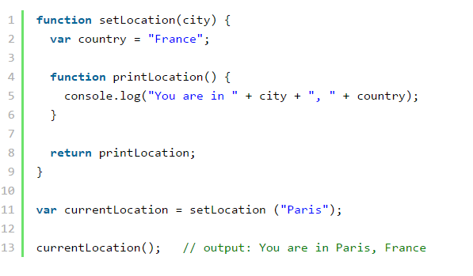

JavaScript (krócej JS) – skryptowy język programowania, stworzony przez firmę Netscape, najczęściej stosowany na stronach internetowych. Twórcą JavaScriptu jest Brendan Eich. Pod koniec lat 90. XX wieku organizacja ECMA wydała na podstawie JavaScriptu standard języka skryptowego o nazwie ECMAScript, aktualnie rozwijaniem tego standardu zajmuje się komisja TC39.
Zastosowanie
Najczęściej spotykanym zastosowaniem języka JavaScript są strony internetowe. Skrypty te służą najczęściej do zapewnienia interakcji poprzez reagowanie na zdarzenia, walidacji danych wprowadzanych w formularzach lub tworzenia złożonych efektów wizualnych. Skrypty JavaScriptu uruchamiane przez strony internetowe mają znacznie ograniczony dostęp do komputera użytkownika. Po stronie serwera JavaScript może działać w postaci node.js lub Ringo. W języku JavaScript można także pisać pełnoprawne aplikacje. Fundacja Mozilla udostępnia środowisko złożone z technologii takich jak XUL, XBL, XPCOM oraz JSLib. Umożliwiają one tworzenie korzystających z zasobów systemowych aplikacji o graficznym interfejsie użytkownika dopasowującym się do danej platformy. Przykładem aplikacji napisanych z użyciem JS i XUL może być klient IRC o nazwie ChatZilla, domyślnie dołączony do pakietu Mozilla. Microsoft udostępnia biblioteki umożliwiające tworzenie aplikacji JScript jako część środowiska Windows Scripting Host. Ponadto JScript.NET jest jednym z podstawowych języków środowiska .NET. Istnieje także stworzone przez IBM środowisko SashXB dla systemu Linux, które umożliwia tworzenie w języku JavaScript aplikacji korzystających z GTK+, GNOME i OpenLDAP.
HISTORIA
W 1996 r. organizacja ECMA rozpoczęła pracę nad specyfikacją języka JavaScript pozbawioną odniesień na temat interpretującego kod środowiska. Język opisany w standardzie ECMA-262 został nazwany ECMAScript. Od tego momentu nazwa JavaScript oznacza jedynie jeden z nadzbiorów języka ECMAScript. Pierwsza wersja standardu była bliska JavaScriptowi w wersji 1.1. Trzecia jako pierwsza rozszerzyła istniejące implementacje. Aktualnie trwają prace nad wersją czwartą.
Osadzanie
W języku HTML za umieszczanie skryptów JS odpowiedzialny jest element <script> z opcjonalnymi argumentami type o wartości text/javascript i language o wartości javascript.
